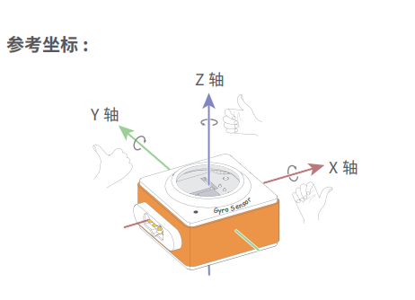

gyro_sensor — 陀螺仪传感器¶
gyro_sensor 模块的主要功能与函数
陀螺仪传感器说明¶
神经元模块的陀螺仪的坐标体系如下图所示：
功能相关函数¶
-
gyro_sensor.get_roll()¶ 获取姿态角的翻滚角，返回的数据范围是
-90 ~ 90
-
gyro_sensor.get_pitch()¶ 获取姿态角的俯仰角，返回的数据范围是
-180 ~ 180
-
gyro_sensor.get_yaw()¶ 获取姿态角的偏航角，返回的数据范围是
-32768 ~ 32767，由于板载的陀螺仪模块是六轴传感器，没有电子罗盘。 所以实际上偏航角只是使用了Z轴角速度的积分。它存在着积累误差。如果是想获得真实偏航角的，这个API不适合使用。
-
gyro_sensor.is_shaked()¶ 检测神经元的陀螺仪模块是否有被摇晃，返回值是布尔值，其中
True表示陀螺仪模块被晃动了，False表示陀螺仪模块未被晃动。
-
gyro_sensor.get_acceleration(axis)¶ 获取三个轴的加速度值，单位是
g，参数：- axis 字符串类型，以
x，y，z代表陀螺仪模块定义的坐标轴。
- axis 字符串类型，以
-
gyro_sensor.get_gyroscope(axis)¶ 获取三个轴的角速度值，单位是
°/秒，参数：- axis 字符串类型，以
x，y，z代表陀螺仪模块定义的坐标轴。
- axis 字符串类型，以
程序示例1：¶
import rocky
import event
import neurons
@event.button_a_pressed
def on_button_a_callback():
codey.stop_other_scripts()
codey.display.show("pit")
while True:
print(neurons.gyro_sensor.get_pitch())
time.sleep(0.05)
@event.button_b_pressed
def on_button_b_callback():
codey.stop_other_scripts()
codey.display.show("rol")
while True:
print(neurons.gyro_sensor.get_roll())
time.sleep(0.05)
@event.button_c_pressed
def on_button_c_callback():
codey.stop_other_scripts()
codey.display.show("yaw")
while True:
print(neurons.gyro_sensor.get_yaw())
time.sleep(0.05)
程序示例2：¶
import rocky
import event
import neurons
@event.start
def start_cb():
codey.display.show("sha")
while True:
print(neurons.gyro_sensor.is_shaked())
time.sleep(0.2)
程序示例3：¶
import rocky
import event
import neurons
@event.start
def start_cb():
while True:
print("gyro z:", end = "")
print(neurons.gyro_sensor.get_gyroscope("z"))
print("accel z:", end = "")
print(neurons.gyro_sensor.get_acceleration("z"))
time.sleep(0.2)